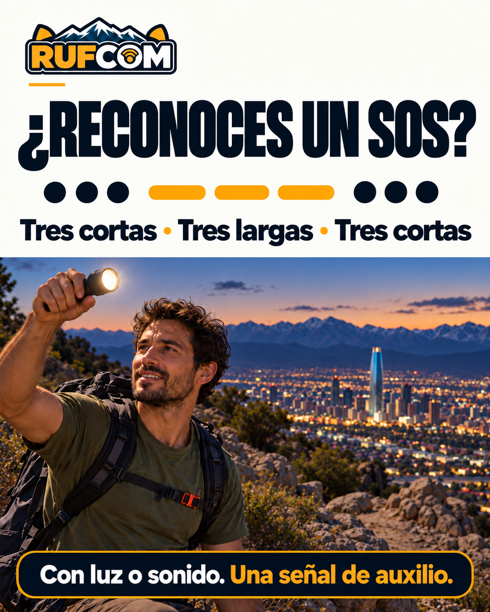
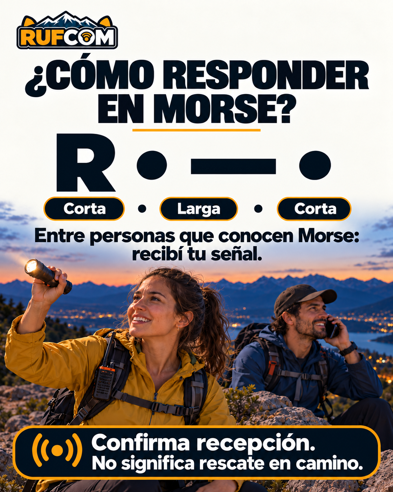

El ritmo importa más que la fuerza
Con una linterna, cada señal es un destello. Para practicar, usa estos tiempos:
- Señal corta (·): enciende la linterna durante 1 segundo.
- Señal larga (—): enciéndela durante 3 segundos.
- Entre una señal y la siguiente: apágala durante 1 segundo.
Con un silbato, haz lo mismo: un sonido de 1 segundo para la señal corta, uno de 3 segundos para la señal larga y 1 segundo de silencio entre señales. Estos tiempos sirven para practicar; puedes hacerlo más rápido manteniendo la misma proporción.
SOS · · · — — — · · ·
Tres cortas → tres largas → tres cortas. Las nueve señales forman un solo grupo continuo, con pausas breves entre ellas. Haz una pausa antes de repetir el grupo.
Ejemplo de práctica: corta de un segundo, larga de tres segundos y separación de un segundo entre señales. El ritmo puede ser más rápido; conserva las proporciones.
No necesitas memorizar todo el alfabeto
S · · ·
Tres puntos.
O — — —
Tres rayas.
Las letras sirven para recordar el patrón; al emitir SOS no agregues las pausas normales entre letras. La señal de socorro se usa cuando necesitas ayuda urgente, no para saludar.
Si ves o escuchas una señal de auxilio
- Observa sin exponerte. Anota hora, dirección, lugar y si el patrón se repite. Diferencia tu ubicación de la ubicación estimada de quien pide ayuda.
- Avisa a rescate. En montaña en Chile, contacta al Cuerpo de Socorro Andino al 136. Describe lo que viste o escuchaste y entrega coordenadas si las tienes. Si no logras comunicarte, busca otro medio seguro para dar aviso.
- Confirma si puedes hablar con la persona. Por voz o radio: «Recibí tu solicitud de ayuda. Estoy avisando a rescate». Di esto cuando estés dando el aviso; no afirmes que un equipo va en camino sin confirmación.
- Mantén la comunicación y sigue las instrucciones de rescate. Evita aproximarte por una ruta peligrosa o perder tu propia ubicación.
No interpretes tres destellos aislados como confirmación de que un rescate está en camino. Tampoco descartes una emergencia porque la persona no logre repetir el patrón perfectamente.
Cómo contestar en Morse

R: · − ·
Corta → larga → corta. Entre personas que conocen Morse, R permite confirmar recepción. Con una linterna, enciéndela para cada señal y apágala en las pausas; mantén la luz encendida tres veces más tiempo para la señal larga que para la corta.
Para practicar: un segundo encendida, un segundo apagada, tres segundos encendida, un segundo apagada y un segundo encendida. Si repites la R, deja una pausa clara entre cada grupo.
R confirma recepción; no significa que el rescate esté en camino. Una persona puede conocer SOS sin conocer R: no supongas que entenderá la respuesta. Da aviso a rescate y usa voz, teléfono o radio cuando puedas para explicar qué estás haciendo.
La respuesta de tres señales por minuto usada en el protocolo alpino es distinta: no debe confundirse con la letra R en Morse ni presentarse como respuesta universal a SOS.
Alfabeto Morse para practicar
Ver las 26 letras
| Letra | Señal |
|---|---|
| A | · — |
| B | — · · · |
| C | — · — · |
| D | — · · |
| E | · |
| F | · · — · |
| G | — — · |
| H | · · · · |
| I | · · |
| J | · — — — |
| K | — · — |
| L | · — · · |
| M | — — |
| N | — · |
| O | — — — |
| P | · — — · |
| Q | — — · — |
| R | · — · |
| S | · · · |
| T | — |
| U | · · — |
| V | · · · — |
| W | · — — |
| X | — · · — |
| Y | — · — — |
| Z | — — · · |
Antes de salir al cerro
Informa tu ruta y hora de regreso a una persona de confianza. Lleva linterna, batería y medios de comunicación. Registra tu salida con Socorro Andino y ciérrala al regresar; el registro no sustituye un aviso de emergencia.